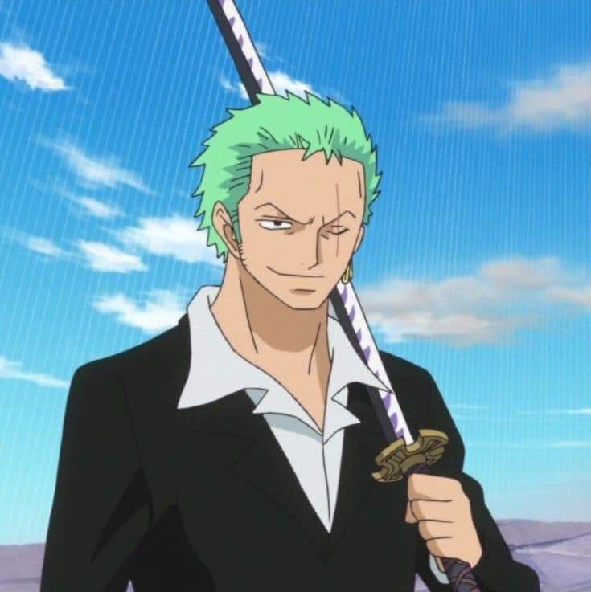
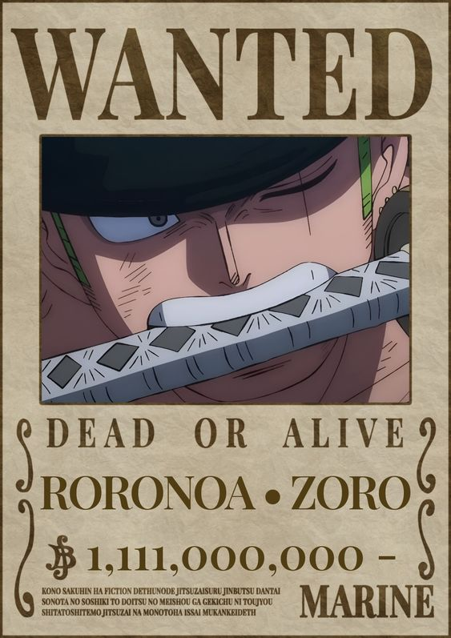
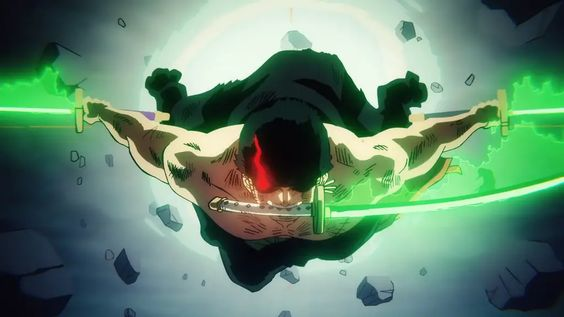
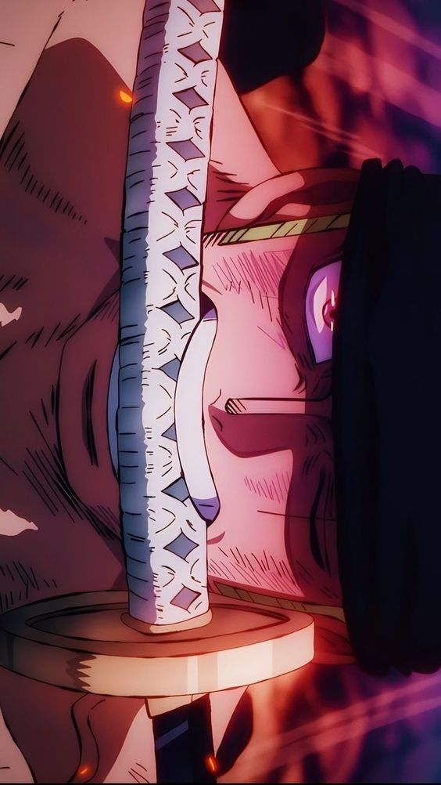

Roronoa Zoro

{kind=link}
Es uno de los personajes principales de One Piece y uno de los miembros más destacados de los Piratas del Sombrero de Paja. Es conocido como "Zoro el Cazador de Piratas" y es el espadachín principal de la tripulación de Luffy. Zoro es un espadachín extremadamente habilidoso y se le considera uno de los mejores espadachines del mundo de One Piece. Su objetivo es convertirse en el mejor espadachín del mundo. Lleva tres espadas, utilizando un estilo de lucha de tres espadas llamado "Santoryu" o "Estilo de los tres espadas". Lleva una espada en cada mano y otra en la boca, lo que le permite ejecutar poderosos y rápidos ataques.

{kind=link}
Zoro es un personaje serio y de pocas palabras. Tiene una personalidad muy determinada y se toma su entrenamiento y sus objetivos muy en serio. Es conocido por su increíble fuerza física, resistencia y su voluntad de hierro. Zoro se esfuerza constantemente por superar sus límites y convertirse en un espadachín aún más fuerte. A lo largo de la serie, Zoro demuestra una gran lealtad hacia Luffy y siempre está dispuesto a arriesgar su vida para proteger a sus amigos y cumplir con su código de honor. Aunque a menudo actúa como el "cerebro" y el consejero tranquilo de la tripulación, también puede ser un poco descuidado y a veces se pierde debido a su terrible sentido de la orientación.

{kind=link}
Zoro se une a los Piratas del Sombrero de Paja después de que Luffy lo salva de ser ejecutado por sus propios compañeros piratas. Desde entonces, ha sido un miembro valioso de la tripulación, participando en numerosas batallas y enfrentándose a poderosos enemigos. A lo largo de su viaje, Zoro desarrolla una reputación como un espadachín formidable y su espíritu de lucha y habilidades con la espada inspiran a otros a seguirlo. Roronoa Zoro es un espadachín habilidoso y leal, conocido por su estilo de tres espadas y su búsqueda por convertirse en el mejor espadachín del mundo. Su fuerza, determinación y lealtad lo convierten en un personaje querido y respetado dentro de la serie One Piece.

{kind=link}